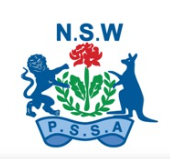
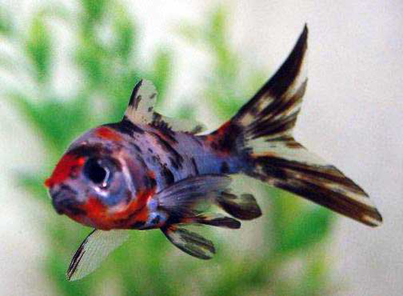
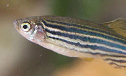
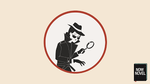
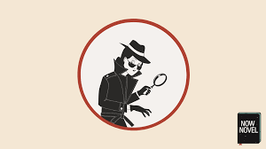

There has been many crazy and funny moments i've had in 2021, some of which I listed here:
One time, while I was getting inside the bus, a boy kept on covering his nose.
I realised that something
really did stink in the bus, so when I went upstairs, I saw vomit all over
4 seats at the back. But that's not all! After
that smelly bus ride, the same boy who kept covering his nose raged
at another boy, starting a whole
wrestle with the boys cursing at eachother like a movie. Actual damage was made, bruises, wounds, you name it!
My friend and I felt
threatened, so we calmly speed-walked away from this incident. Rumor had it, the boy who got attacked made a very mean joke
relating to the vomit on the bus, and that related to past-time incidents...
On the 11th of March, I sat down on one of the most major academic exams in Australia, the NSW Selective
High School Placement Test.
The test was quite a hassle, I had to study 7-9 hours per day! The good news is, my hard work paid off.
Now, I will attend Penrith Selective High School this year!
For the first time in 6 years, I finally attended a PSSA sports team! PSSA is an NSW sports system where
schools can compete against other schools in different sports. I played for our School's Softball
team. However, my opportunity
was wasted. It was bad weather almost every week, and the buses never came on the
remaining days! Not to worry, I have selected myself into sports
teams for highschool, so I still have chances!

For my Birthday, I was gifted an aquarium! It was 5.6.21 that day, and it was
really cold. This is why I caught a cold while I was settng up the aquarium (with very cold water).
My dad was planning to buy 4 small fish and 4 large fish,
and to our surprise, we were only
allowed to buy 2 large fish, or 8 small fish! We cheated, and bought 2 spotty goldfish with 4
very tiny stripy fish.
 
I guess we learnt our lesson, because every fish has died except for
one stripy fish, a very agressive one who still to this day is alive.
Sadly, during Term 3, it was full-on remote learning. During this
time, it was pretty hard to learn without full contact of the teacher and without going to tuition.
Luckily, since it was remote learning, no teacher could tell if you are calling/playing with
your friends or not! As soon as I finish my work, I chatted and played roblox with
my friends. That period was so much fun, I would game almost 3 hours per day! However, face-to-face learning is
much better, so when the lockdown was over in Term 4, i was overjoyed!
Term 4 was an all-round fun term. As it was the last term of Primary School, the teachers
weren't so strict. In fact, it really was all fun and games!
We did quizzes,
competed in the Teacher's vs Students matches, had a graduation ceremony, and to put a cherry-on-top,
a farewell dinner! Many strange things happened too...
there was an love letter mystery and even an actual couple in our school!  

On 16.12.21, it was very hard to say
goodbye to a place I went to for 6 years,
and even more heart-breaking to lose my long-lasted friends! It is fine though, i have
all of their Skype accounts, so we now
chat almost daily.